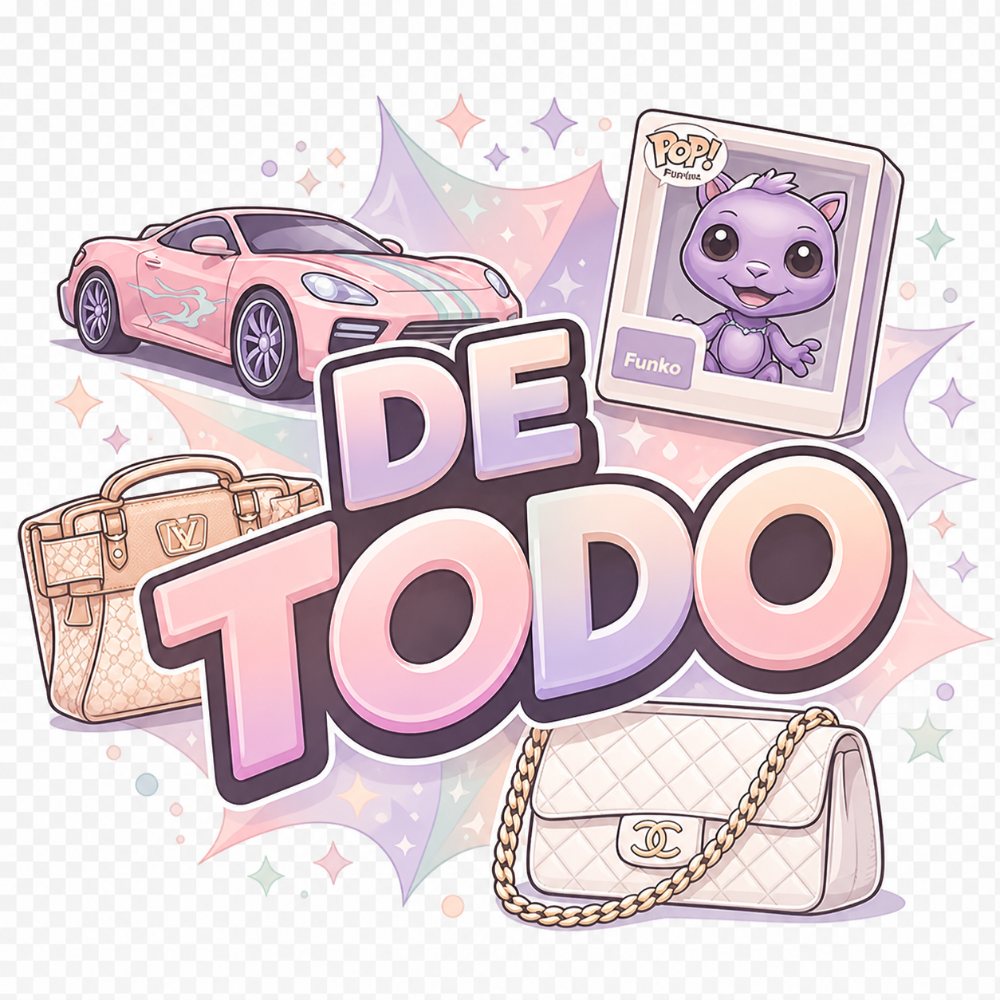

Pastel Soft
La más alineada con tu landing actual. Tiene lavanda, durazno y rosa suave, así que conversa muy bien con el `background`, el `hero` y los tonos de interfaz.
isologo/isologo-pastel-soft.png
Estas versiones ya están aterrizadas a la paleta pastel de tu página actual. La portada quedó conectada con la versión Pastel Soft, que es la que mejor empata con el fondo, los botones y la sensación femenina del catálogo.

La más alineada con tu landing actual. Tiene lavanda, durazno y rosa suave, así que conversa muy bien con el `background`, el `hero` y los tonos de interfaz.
isologo/isologo-pastel-soft.png
Más editorial y con un poco más de presencia. Funciona muy bien si quieres que la marca se sienta más curada y premium.
isologo/isologo-pastel-boutique.png
La más limpia y amable para móvil. Tiene menos peso visual y puede servir mejor en secciones pequeñas o banners compactos.
isologo/isologo-pastel-light.png
Más llamativa y más boutique-glam. Puede servir para promos, historias o piezas donde quieras que el logo tenga más impacto visual.
isologo/isologo-pastel-luxe.png